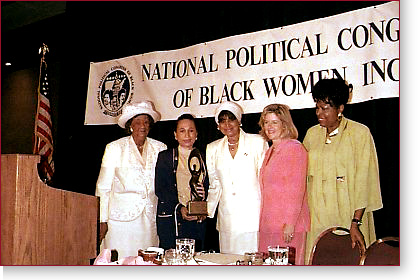

|

|
Bill Clinton and Al Gore on the Issues Strengthening America's
Families: For Immediate Release September 26 - September 21 - September 18 - September 14 - August 7 - Get Involved! To learn more about African American outreach activities in your area, contact Harold Gist at 202/530-1397 or the Clinton-Gore campaign office in your state. |
Paid for by Clinton/Gore '96 General Committee, Inc.